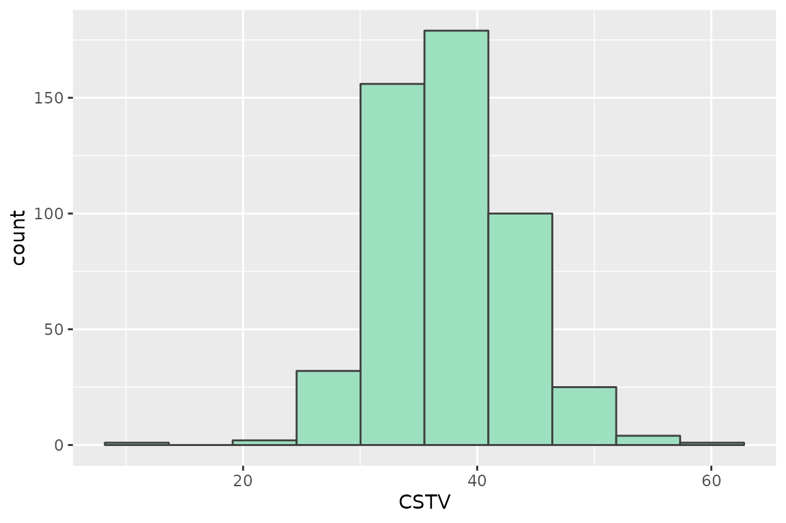
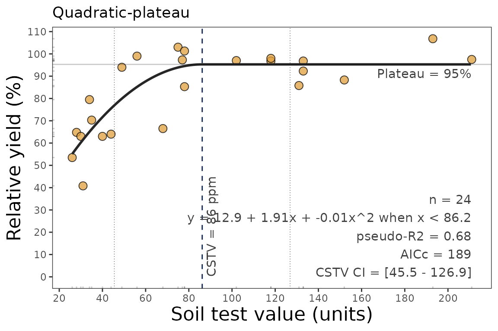
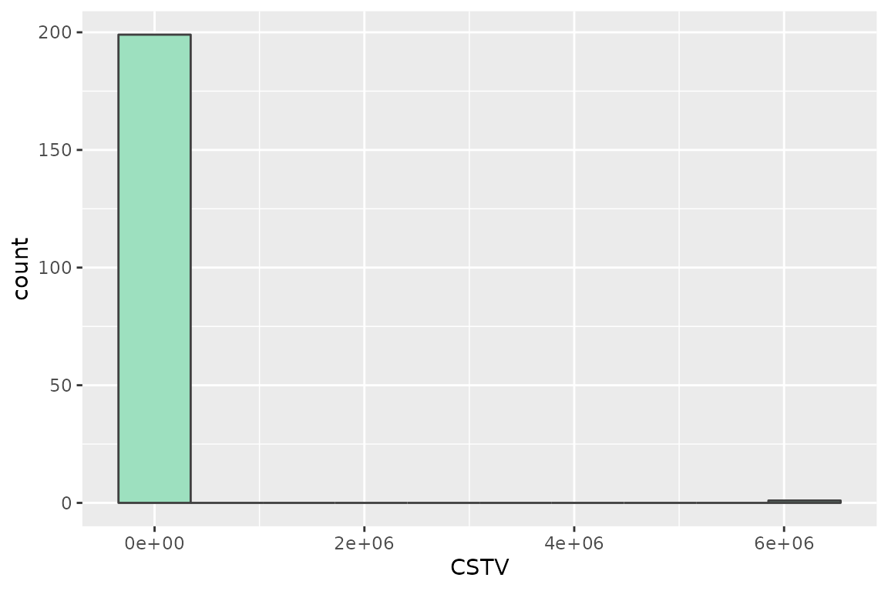
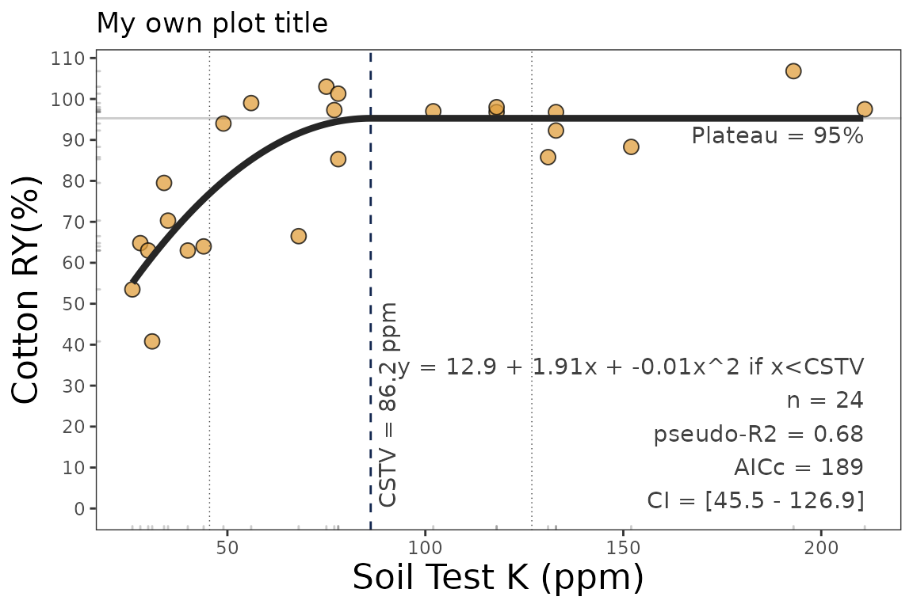

Quadratic-plateau response
Adrian Correndo & Austin Pearce
Source:vignettes/quadratic_plateau_tutorial.Rmd
quadratic_plateau_tutorial.Rmd
Description
This tutorial demonstrates the quadratic_plateau()
function for fitting a continuous response model and estimating a
critical soil test value (CSTV). This function fits a segmented
regression model that follows two phases: a positive curvilinear
response followed by a flat plateau phase. The join point is often
interpreted as the CSTV. See Bullock and Bullock (1994) for
example.\[
\begin{cases}
x < j,\ y = a + bx + cx^2 \\
x > j,\ y = a + bj + cj^2
\end{cases}
\]
wherey represents the fitted crop relative yieldx the soil test valuea the intercept (ry when stv =
0)b the linear slope (as the change in ry per unit of soil
nutrient supply or nutrient added)c the quadratic coefficient (giving the curve shape)j the join point when the plateau phase starts (i.e., the
CSTV).
This model is slightly more complex than the linear-plateau, but the
curvature of the response is argued to be more biologically reasonably
and economical useful. The quadratic_plateau() function
works automatically with self-starting initial values to facilitate the
model convergence.
Disadvantages are that:
- the default CSTV confidence interval (based on symmetric Wald’s
intervals) is generally unreliable. We recommend the user try the
boot_quadratic_plateau()function for a reliable confidence interval estimation of parameters via bootstrapping (resampling with replacement).
General Instructions
Load your dataframe with soil test value and relative yield data.
-
Specify the following arguments into the function
quadratic_plateau():data(optional)stv(soil test value)ry(relative yield) columns or vectorstarget(optional) for calculating the soil test value at some RY level along the slope segment.tidyTRUE(produces a data.frame with results) orFALSE(store results as list),plotTRUE(produces a ggplot as main output) orFALSE(no plot, only results as data.frame),residTRUE(produces plots with residuals analysis) orFALSE(no plot)
Run and check results.
Check residuals plot, and warnings related to potential limitations of this model.
Adjust curve plots as desired with additional
ggplot2functions.
Tutorial
Suggested packages
# Install if needed
library(ggplot2) # Plots
library(dplyr) # Data wrangling
library(tidyr) # Data wrangling
# library(utils) # Data wrangling
# library(data.table) # Mapping
library(purrr) # MappingThis is a basic example using three different datasets:
Load dataset
# Native fake dataset from soiltestcorr package
corr_df <- soiltestcorr::data_testFit quadratic_plateau()
1. Individual fits
1.1. tidy = TRUE (default)
It returns a tidy data frame (more organized results)
quadratic_plateau(corr_df, STV, RY, tidy = TRUE)
#> # A tibble: 1 × 16
#> intercept slope equation plateau CSTV lowerCL upperCL CI_type target STVt
#> <dbl> <dbl> <chr> <dbl> <dbl> <dbl> <dbl> <chr> <dbl> <dbl>
#> 1 44.1 2.86 44.1 + 2.8… 96.4 36.5 29.7 43.4 Wald C… 96.4 36.5
#> # ℹ 6 more variables: AIC <dbl>, AICc <dbl>, BIC <dbl>, R2 <dbl>, RMSE <dbl>,
#> # pvalue <dbl>1.2. tidy = FALSE
It returns a LIST (may be more efficient for multiple fits at once)
quadratic_plateau(corr_df, STV, RY, tidy = FALSE)
#> $intercept
#> [1] 44.14905
#>
#> $slope
#> [1] 2.862649
#>
#> $equation
#> [1] "44.1 + 2.86x + -0.04x^2 when x < 36.5"
#>
#> $plateau
#> [1] 96.42367
#>
#> $CSTV
#> [1] 36.52186
#>
#> $lowerCL
#> [1] 29.7
#>
#> $upperCL
#> [1] 43.4
#>
#> $CI_type
#> [1] "Wald Conf. Interval"
#>
#> $target
#> [1] 96.4
#>
#> $STVt
#> [1] 36.5
#>
#> $AIC
#> [1] 1023.43
#>
#> $AICc
#> [1] 1023.73
#>
#> $BIC
#> [1] 1035.11
#>
#> $R2
#> [1] 0.53
#>
#> $RMSE
#> [1] 9.85
#>
#> $pvalue
#> [1] 01.3. Alternative using the vectors
You can use the stv and ry vectors from the
data frame using the $.
fit_vectors_tidy <- quadratic_plateau(stv = corr_df$STV, ry = corr_df$RY)
fit_vectors_list <- quadratic_plateau(stv = corr_df$STV, ry = corr_df$RY, tidy = FALSE)2. Multiple fits at once
# Example 1. Fake dataset manually created
data_1 <- data.frame("RY" = c(65,80,85,88,90,94,93,96,97,95,98,100,99,99,100),
"STV" = c(1,2,3,4,5,6,7,8,9,10,11,12,13,14,15))
# Example 2. Native fake dataset from soiltestcorr package
data_2 <- soiltestcorr::data_test
# Example 3. Native dataset from soiltestcorr package, Freitas et al. (1966), used by Cate & Nelson (1971)
data_3 <- soiltestcorr::freitas1966 %>%
rename(STV = STK)
data.all <- bind_rows(data_1, data_2, data_3, .id = "id")Note: the stv column needs to have the same name for all
datasets if binding rows.
2.1. Using map()
# Run multiple examples at once with purrr::map()
data.all %>%
nest(data = c("STV", "RY")) %>%
mutate(model = map(data, ~ quadratic_plateau(stv = .$STV, ry = .$RY))) %>%
unnest(model)
#> # A tibble: 3 × 18
#> id data intercept slope equation plateau CSTV lowerCL upperCL CI_type
#> <chr> <list> <dbl> <dbl> <chr> <dbl> <dbl> <dbl> <dbl> <chr>
#> 1 1 <tibble> 61.0 8.59 61 + 8.5… 97.7 8.56 6.6 10.5 Wald C…
#> 2 2 <tibble> 44.1 2.86 44.1 + 2… 96.4 36.5 29.7 43.4 Wald C…
#> 3 3 <tibble> 12.9 1.91 12.9 + 1… 95.3 86.2 45.5 127. Wald C…
#> # ℹ 8 more variables: target <dbl>, STVt <dbl>, AIC <dbl>, AICc <dbl>,
#> # BIC <dbl>, R2 <dbl>, RMSE <dbl>, pvalue <dbl>2.2. Using group_modify()
Alternatively, with group_modify, nested data is not
required. However, it still requires a grouping variable (in this case,
id) to identify each dataset. group_map() may
also be used, though list_rbind() is required to return a
tidy data frame of the model results instead of a list.
data.all %>%
group_by(id) %>%
group_modify(~ quadratic_plateau(data = ., STV, RY))
#> # A tibble: 3 × 17
#> # Groups: id [3]
#> id intercept slope equation plateau CSTV lowerCL upperCL CI_type target
#> <chr> <dbl> <dbl> <chr> <dbl> <dbl> <dbl> <dbl> <chr> <dbl>
#> 1 1 61.0 8.59 61 + 8.59x… 97.7 8.56 6.6 10.5 Wald C… 97.7
#> 2 2 44.1 2.86 44.1 + 2.8… 96.4 36.5 29.7 43.4 Wald C… 96.4
#> 3 3 12.9 1.91 12.9 + 1.9… 95.3 86.2 45.5 127. Wald C… 95.3
#> # ℹ 7 more variables: STVt <dbl>, AIC <dbl>, AICc <dbl>, BIC <dbl>, R2 <dbl>,
#> # RMSE <dbl>, pvalue <dbl>3. Bootstrapping
Bootstrapping is a suitable method for obtaining confidence intervals for parameters or derived quantities. Bootstrapping is a resampling technique (with replacement) that draws samples from the original data with the same size. If you have groups within your data, you can specify grouping variables as arguments in order to maintain, within each resample, the same proportion of observations than in the original dataset.
This function returns a table with as many rows as the resampling size (n) containing the results for each resample.
boot_qp <- boot_quadratic_plateau(corr_df, STV, RY, n = 500) # only 500 for sake of speed
boot_qp %>% head(n = 5)
#> # A tibble: 5 × 13
#> boot_id intercept slope plateau CSTV target STVt AIC AICc BIC R2
#> <dbl> <dbl> <dbl> <dbl> <dbl> <dbl> <dbl> <dbl> <dbl> <dbl> <dbl>
#> 1 1 34.6 3.55 96.8 35.1 96.8 35.1 1037. 1037. 1049. 0.6
#> 2 2 48.9 2.37 96.4 40.0 96.4 40 1019. 1019. 1031. 0.52
#> 3 3 44.5 2.88 96.4 36.1 96.4 36.1 1011. 1011. 1022. 0.56
#> 4 4 49.0 2.40 97.4 40.3 97.4 40.3 1043. 1044. 1055. 0.54
#> 5 5 35.9 3.51 96.8 34.7 96.8 34.7 1031. 1031. 1042. 0.58
#> # ℹ 2 more variables: RMSE <dbl>, pvalue <dbl>
# CSTV Confidence Interval
quantile(boot_qp$CSTV, probs = c(0.025, 0.5, 0.975))
#> 2.5% 50% 97.5%
#> 28.10008 37.20287 49.26717
# Plot
boot_qp %>%
ggplot2::ggplot(aes(x = CSTV))+
geom_histogram(color = "grey25", fill = "#9de0bf", bins = 10)
4. Plots
4.1. Correlation Curve
We can generate a ggplot with the same
quadratic_plateau() function.
We just need to specify the argument plot = TRUE.
data_3 <- soiltestcorr::freitas1966
plot_qp <- quadratic_plateau(data = data_3, STK, RY, plot = TRUE)
plot_qp
4.2. Fine-tune the plots
As ggplot object, plots can be adjusted in several ways, such as modifying titles and axis scales.
plot_qp +
# Main title
ggtitle("My own plot title")+
# Axis titles
labs(x = "Soil Test K (ppm)",
y = "Cotton RY(%)") +
# Axis scales
scale_x_continuous(limits = c(20,220),
breaks = seq(0,220, by = 10))+
# Axis limits
scale_y_continuous(limits = c(30, 110),
breaks = seq(30, 110, by = 10))
4.3. Residuals
Set the argument resid = TRUE.
# Residuals plot
quadratic_plateau(data = data_3, STK, RY, resid = TRUE)
#> # A tibble: 1 × 16
#> intercept slope equation plateau CSTV lowerCL upperCL CI_type target STVt
#> <dbl> <dbl> <chr> <dbl> <dbl> <dbl> <dbl> <chr> <dbl> <dbl>
#> 1 12.9 1.91 12.9 + 1.9… 95.3 86.2 45.5 127. Wald C… 95.3 86.2
#> # ℹ 6 more variables: AIC <dbl>, AICc <dbl>, BIC <dbl>, R2 <dbl>, RMSE <dbl>,
#> # pvalue <dbl>